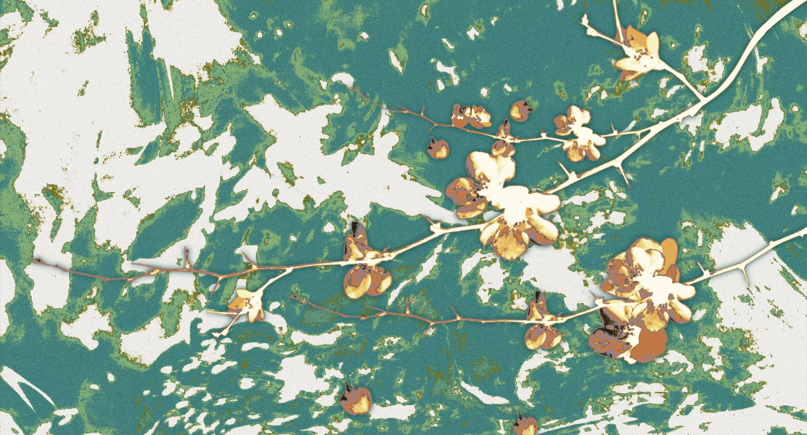

不过是一抔砂砾，不可度量，无人问津。
只因信了“青春当放手一搏”这话，便欣然接下理科所有刁难，决意磨砺自己，一头扎进计算机的怀抱。
自尊心，是我的底色。
鸟既振羽，便知它原属天空。凭着这样一份冲劲，我昂起头颅，从小镇一路闯进更大的城市。
可走得越远，越看清自己的局促——视野、认知，甚至是骨子里的惰怠......我低下头，终于看见罅隙的青苔，也终于认下了自己的平凡。
于是眼高手低化作笑谈。我坦然:自己是一掊砂砾。
然而，尘土飞扬，谁又能度量小小的砂砾会在何时何地聚成沙暴？